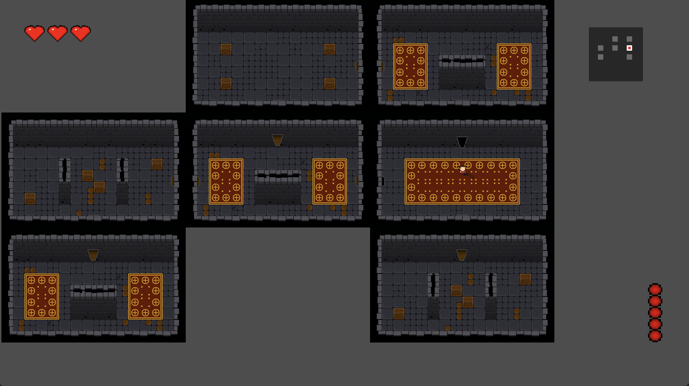

Game Dev Post 3
In this post I discuss my final additions to my game and also some challenges and difficulties I faced during development. This will be the last post I make on my game development project as I want to explore other projects that interest me.
Introduction
To recap everything that has happened so far, I have made some base features for my game, such as player movement, shooting, and enemy AI. I also have a basic UI that displays the player's health and ammo. I have also created a level layout that is procedurally generated. This was the main focus of my project. I really wanted to challenge myself coding wise and create something that I have never done before.
What I have done since my last post is redo the level generation. I was not happy with the result and I wanted to create something that was more similar to the games I was inspired by. I also fixed some bugs and improved the enemy AI. I added some sound effects to make the game feel less empty and created some rooms. I'm happy with the result and I think it's a good start to a game.
Redoing the Level Generation
I was not happy with the result of the level generation in my last post. I wanted to create something that was more similar to the games I was inspired by. I used a different method that didn't use a graph to generate the level layout. Instead, I placed random rooms to cover the entire screen, I then chose a starting room and randomly connected rooms attached to it. This byfar produced the best results and was the easiest to implement.

MiniMap
As you can see in the above image there is a minimap. This minimap wasn't too hard to implement since I had already created a level layout that was attached in order. I got the position of each room and scaled them down and drew squares to represent them. To find where the player is I just got the player's position and found the closest room to it. I then drew a square in that room to represent the player's position. I also updated the minimap to show completed rooms. I used a signal which is called when the room is completed to accomplish this.
Enemy AI
The previous enemy AI worked fine, but I wanted to try something else just to see how it would turn out. I created a new enemy AI that would orbit the player based on a set distance. If the player got too far the mob would go closer, if the player got to close it would go further. This worked well enough to make the enemies feel alive and not totally like a computer.
Extra Stuff
Ontop of some bug fixing I also added sound effects and a new type of tile which is breakable. I think this adds a lot to the game and makes it feel more complete. The breakable tile makes the gameplay much more fun as it adds a new element into the game. The sound effects also make the game come together better. I also added some rooms that have a different layout to the others. This adds some variety to the game and makes it more interesting to play.
Challenges and Difficulties
When I first started this game I really enjoyed working on every aspect of it, from the sprites to the code. However, as I got further into development I started to lose interest in spriting. I think this was because I enjoyed the coding part and the game design aspect of the development. This loss of interest in spriting really took a toll on development and things really started to slow down, I also just wanted to move onto other projects as well. That is why I pushed to finish this project and move onto something else. I rushed the ending and just wanted to have something that was playable and somewhat fun. I'm happy with the result and I think it's a good start to a game. I may come back to this project in the future or perhaps start a new game using a different engine. All in all this was a great learning experience and fun project to work on. I got to learn a lot about procedural generation, how to create a game from scratch, and eventhough I don't like spriting my ability to do so has improved.
Final Thoughts
This project was a fun challenge and one that I'm happy with. I have uploaded the game to itch.io where you can play it. It still has bugs that I didn't have time to fix but it's playable and somewhat fun. Here is the link to the game: The Slime's Dungeon
The biggest reason I wanted to create this game was to learn more about game development and everything that comes with it. While I'm young and have the time I want to explore as many niches in coding as I can whether that be AI and Machine Learning or Game Development. This was a nice introduction to game development and now I want to move onto something else. I'm not sure what that will be yet but I'm excited to see what I will create next.
Thank's for reading. I hope you enjoyed this post and I hope you enjoy the game. I will be back with more posts soon.
Posted by: Aidan Vidal
Posted on: July 15, 2024